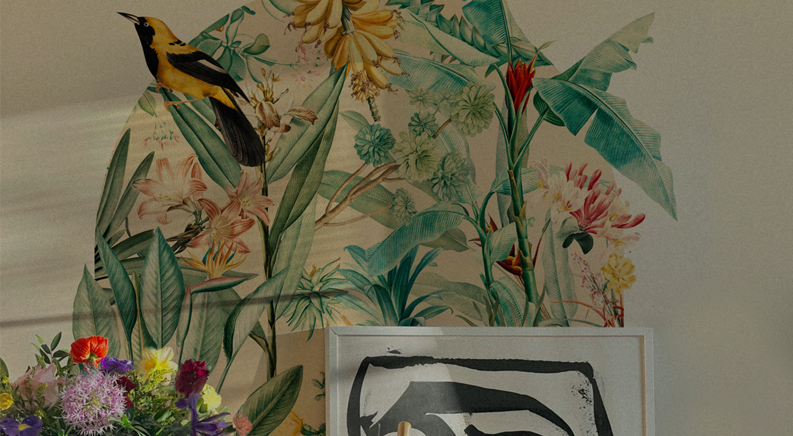
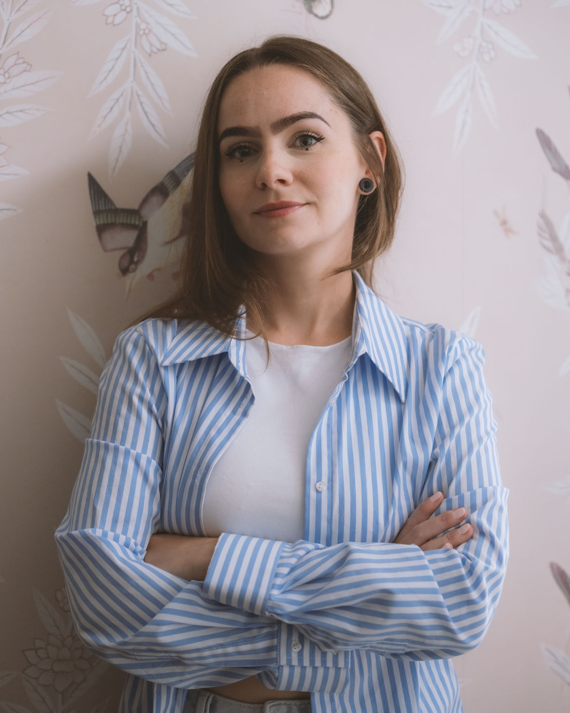

[Flyer held in hand]

Vintage Murals — flyer
Print ad presenting personalised wall décor, consistent with the brand.
My role: layout, typography, print file.
Available · Milan or remote · employment or freelance (Partita IVA)
Graphic Designer — print, packaging, surface patterns & branding.
9+ years across print houses, textile companies and e-commerce, for clients in Europe, North America, Australia and the UAE. I design brand identities, labels and patterns, and prepare the production files myself.
[Your decal or illustration as a cut-out PNG]

Six projects. Each one shows my role and how it was made.
[Photo: decal on a real wall, in an interior]

Featured · Product & surface design
Collage decals with petals and leaves breaking out of the frame, cut on a Summa plotter. Sold across several Etsy stores.
My role: concept, collage, plotter cut files.
Read case study →
[Flyer held in hand]
Print ad presenting personalised wall décor, consistent with the brand.
My role: layout, typography, print file.
[Bottle or jar, label in context]

Labels & packaging
[Food / cosmetics / alcohol] label, from concept to print file.
My role: [design, print preparation]
[Pattern repeat + on fabric]

Surface patterns
Licensable patterns for wallpaper, textiles and print-on-demand.
My role: illustration, repeat, colourways.
[Logo applied: card, van, website]

Branding
Logo for an electrical installation company — reliable, technical, modern.
My role: [your part] · with Roksana Mistal
[Logo on a site banner / brochure]

Branding · Real estate
Identity for a new residential area: forest calm, clean lines.
My role: [your part] · with Roksana Mistal
DTP & print-ready files Plotter cut files E-commerce graphics [Colour management]
Labels & packaging Surface patterns Illustration & collage Brand identity & logos
[Illustrator] [Photoshop] [InDesign] [Figma]
Polish — native English — [level] Italian — [level]
[Your photo — natural light]

About
I come from production, so I design for the shelf, the wall and the fabric — not only the screen.
I am a graphic designer and surface pattern artist based in Milan. Over 9 years in print houses, textile companies and e-commerce taught me to carry a project from the first sketch to the file that goes to print. [One personal sentence: what you love, what inspires you.]
E-mail is the fastest way to reach me.